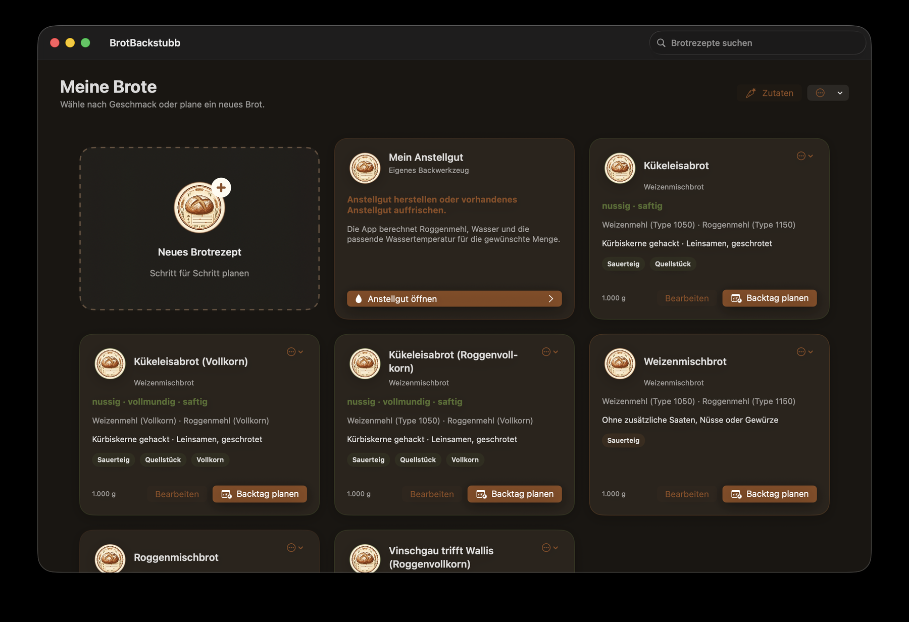

Überblick

BrotBackstubb 0.1.0
BrotBackstubb unterstützt dich beim Erstellen, Berechnen und zeitlichen Durchführen frei geschobener Brote. Die App berechnet Zutatenmengen aus dem gewünschten Brotgewicht, berücksichtigt die Wasseraufnahme der ausgewählten Mehle sowie das Wasser von Brüh- und Quellstücken und führt dich am Backtag Schritt für Schritt durch das Rezept.
Alle Rezepte erscheinen auf der Startseite Meine Brote. Von dort erstellst du ein Rezept, bearbeitest ein vorhandenes Rezept, erzeugst eine PDF- oder Mela-Fassung und startest den Backtag.
Grundprinzip
Warnungen im Rezeptassistenten kennzeichnen Werte außerhalb der empfohlenen Bereiche. Sie blockieren begründete Sonderfälle nicht. So lassen sich auch traditionelle Rezepte abbilden.
Meine Brote
Rezeptkarten
Eine Rezeptkarte zeigt Name, Brotart, geschmacksprägende Zutaten, Verfahrensmerkmale und Zielgewicht. Die wichtigsten Aktionen stehen am unteren Rand:
- öffnet unmittelbar die zeitliche Planung und ist als wichtigste Aktion hervorgehoben.
- öffnet den Rezeptassistenten mit den vorhandenen Werten.
- Das Aktionsmenü oben rechts bietet PDF-Anzeige und -Speicherung, Mela-Übergabe, Bearbeiten und Löschen.
Über das Suchfeld oben rechts filterst du die gespeicherten Brote. Neues Brotrezept startet den Assistenten.
Mein Anstellgut
Die eigene Karte Mein Anstellgut berechnet Roggenmehl, Wasser und Wassertemperatur für die gewünschte Anstellgutmenge. Sie gehört nicht zu einem einzelnen Brotrezept und kann jederzeit geöffnet werden.
Ein Rezept erstellen
Der Assistent führt abhängig von den ausgewählten Zutaten in bis zu acht Schritten durch das Rezept. Mit Weiter und Zurück wechselst du zwischen den Seiten. Beim Bearbeiten speichert Änderungen speichern das bestehende Rezept; über Weitere Optionen kannst du eine Kopie anlegen.
- Name, Anzahl der Brote und gewünschtes Gewicht jedes fertig gebackenen Brotes festlegen.
- Eine bis drei Mehlsorten auswählen und deren Anteile auf insgesamt 100 % verteilen.
- Die automatisch empfohlene Roggen-, Weizen- oder Dinkelsauerteigführung prüfen und - soweit angeboten - anpassen.
- Schrot, Körner, Saaten, Nüsse und Gewürze auswählen.
- Bei vorhandenen Vorstückzutaten Brühstück oder Quellstück festlegen. Ohne solche Zutaten überspringt die App diesen Schritt automatisch.
- Den Gesamtsalzgehalt bestimmen.
- Die berechnete Grundlage prüfen.
- Eine Rezeptbeschreibung verfassen oder einen Vorschlag einsetzen.
Mehrere Brote gleichzeitig backen
Im ersten Schritt des Assistenten legst du die Anzahl der Brote und das Fertiggewicht je Brot getrennt fest. Bei vier Broten zu je 1.000 g berechnet BrotBackstubb deshalb die Zutaten für insgesamt 4.000 g fertiges Brot. Sauerteig, Vorstück, Hauptteigwasser, Salz, Hefe und alle weiteren Zutaten werden gemeinsam auf die vollständige Charge skaliert.
Beim Schritt Rundwirken und formen nennt die App die Anzahl der Portionen und das ungefähre Teiggewicht je Portion. Die geplante Arbeitszeit beträgt für das erste Brot den im Rezept hinterlegten Grundwert - standardmäßig 10 Minuten - und zusätzlich 3 Minuten für jedes weitere Brot. Damit plant die App beispielsweise 19 Minuten für vier und 37 Minuten für zehn Brote.
Mehle und Wasseraufnahme
Jede Mehlsorte besitzt einen eigenen Wasseraufnahmefaktor. BrotBackstubb berechnet den Wasserbedarf jeder gewählten Mehlsorte einzeln und addiert die Ergebnisse. Eine Mischung wird deshalb nicht mit einem pauschalen Durchschnittswert behandelt.
Das erste Mehl beginnt mit 100 %. Weitere Mehle sind optional. Beim Hinzufügen schlägt die App für das neue Mehl zunächst den noch freien Rest bis 100 % vor. Änderst du einen Anteil selbst, bleibt deine Eingabe erhalten. Mit Rest automatisch ergänzen kannst du das zuletzt hinzugefügte Mehl wieder auf den verbleibenden Anteil setzen. Erst wenn alle aktiven Mehle zusammen 100 % ergeben, ist die Mischung vollständig.
Mit Hydration anpassen · TA-Korrektur passt du ausschließlich die Wassermenge an eine konkrete Mehlcharge oder deine Backerfahrung an. Ein Korrekturpunkt verändert die Netto-Hydration um genau einen Prozentpunkt und damit die Teigausbeute um einen Punkt. 70 % Hydration entsprechen beispielsweise einer TA von 170. Als Bezugsmenge dienen das gesamte Mehl und die als Getreideerzeugnis geführten Zutaten im Brüh- oder Quellstück. Die App zeigt Ausgangswert, korrigierte Hydration, TA und die Wasseränderung in Gramm an. Der Bereich reicht von -10 bis +10 Punkten; größere Änderungen können die Teigkonsistenz und bei frei geschobenen Broten die Formstabilität deutlich beeinflussen. Ein Doppelklick auf den Regler setzt die Korrektur auf 0 zurück.
Die drei unterstützten Sauerteigführungen
BrotBackstubb berechnet bewusst nur Roggen-, Weizen- und Dinkelsauerteig automatisch. Diese drei Varianten decken die gebräuchlichsten Brote ab und besitzen jeweils eine eigene Führung. Andere Mehle dürfen Bestandteil des Hauptteigs sein, erhalten aber keine aus Roggen, Weizen oder Dinkel abgeleiteten Sauerteigwerte.
Roggensauerteig
Bei einem Roggenanteil erkennt die App die Brotart und schlägt einen passenden Versäuerungsbereich vor. Automatisch verwendet den Richtwert. Für ein traditionelles oder bewusst abweichendes Rezept kannst du einen eigenen Wert eingeben. Ein Wert außerhalb der Empfehlung erzeugt eine Warnung, verhindert das Fortfahren aber nicht.
Zusätzlich wählst du die gewünschte Geschmacksrichtung der Einstufenführung. Mild säuerlich verwendet 2 % aktives Anstellgut und eine Führung bei 27-28 °C. Herzhaft säuerlich verwendet 5 % Anstellgut und eine Führung bei 25-27 °C. Die Reifezeit beträgt in beiden Fällen ungefähr 20 Stunden. Die App berechnet die benötigte Anstellgutmenge aus der Sauerteigmehlmenge und übernimmt Führungstemperatur und Reifezeit in den Backtag.
Weizensauerteig
Beim mild-aromatischen Weizensauer werden 20 % der Gesamtmehlmenge aus Weizen bei TA 200 mit 5 % aktivem Anstellgut etwa 16 Stunden bei 26-28 °C geführt. Der optionale pH-Orientierungsbereich beträgt 3,6-4,2.
Dinkelsauerteig
Beim milden Dinkelsauer werden 10 % der Gesamtmehlmenge aus Dinkel bei TA 200 mit 10 % aktivem Anstellgut etwa 16 Stunden bei 28-30 °C geführt. Wegen der besonderen Eigenschaften des Dinkels beurteilt die App die Reife hier über Volumenzuwachs, feine Gärbläschen und einen mild-säuerlichen Geruch und gibt keinen pauschalen pH-Zielwert vor.
Schrot, Körner und weitere Zutaten
Zusätzliche Zutaten sind nach ihrer Verwendung getrennt. Schrote werden als Getreideerzeugnisse geführt; Saaten, Kerne und Nüsse werden nicht einfach wie Mehl behandelt. Die Mengen gibst du in Gramm ein. Die App zeigt den ungefähren Bezug zur Mehlmenge und warnt, wenn ein frei geschobenes Brot voraussichtlich an Formstabilität verliert.
Gewürzgrenzen beziehen sich auf die Rezeptgröße. Eine Warnung - beispielsweise bei Schabzigerklee - ist ein fachlicher Hinweis und kein Verbot.
Brühstück und Quellstück
| Verfahren | Verwendung und Ablauf |
|---|---|
| Brühstück | Vor allem für Schrot, Flocken und grobe Getreidebestandteile. Mit etwa 90 °C heißem Wasser ansetzen und ungefähr 3 Stunden stehen lassen. |
| Quellstück | Für gemischte Saaten und stark wasserbindende Zutaten. Mit 5-25 °C warmem Wasser ansetzen und je nach Zeitplan quellen lassen. |
Jede Zutat besitzt dafür einen eigenen Quellwasserfaktor. Das Vorstückwasser wird automatisch berechnet und später korrekt mit dem Hauptteigwasser zusammengeführt.
Salzgehalt und Aufteilung
Der eingestellte Salzgehalt bezeichnet immer die Gesamtsalzmenge und bezieht sich auf die gesamte Mehlmenge. Bei einem Brüh- oder Quellstück verwendet die App 2 % Salz bezogen auf dessen feste Zutaten. Das gilt für Schrot, Saaten, Körner, Flocken und Nüsse. Dieser Anteil wird nicht zusätzlich gerechnet, sondern vom Gesamtsalz abgezogen; nur der Rest kommt in den Hauptteig. In Rezeptansicht, Backablauf und Export erscheinen beide Teilmengen an der jeweils richtigen Stelle.
Rezeptbeschreibung
Die Beschreibung verändert keine Berechnung. Du kannst sie selbst schreiben, einen lokalen Standardtext einsetzen oder - sofern auf dem Mac verfügbar - Apple Intelligence für einen Formulierungsvorschlag verwenden. Dabei übergibt die App die tatsächlichen Mehlanteile und passende, zurückhaltende Geschmackshinweise zu Weizen, Roggen, Dinkel, Emmer und Einkorn. So wird beispielsweise ein Dinkel-Emmer-Brot nicht als Weizenbrot bezeichnet und sein Getreidecharakter kann im Text berücksichtigt werden. Die App übernimmt eine zusammenhängende Beschreibung und entfernt versehentlich wiederholte Fassungen. Der Text wird beim Mela-Export übernommen.
Ein Rezept verwenden
Berechnete Rezeptwerte
BrotBackstubb skaliert alle Mengen auf Anzahl und gewünschtes Fertiggewicht der Brote und berücksichtigt dabei den Backverlust. Angezeigt werden unter anderem Gesamtteiggewicht, Anzahl und ungefähres Gewicht der Teiglinge, Fertiggewicht je Brot, Mehlmenge, Teigausbeute, Sauerteigführung, Vorstück, Salz, Hefe, Zielteigtemperatur, Stückgare sowie das von Brotart und Gewicht eines einzelnen Brotes abhängige Backprofil.
Wie der Dampf erzeugt wird, hängt vom Backofen und der eigenen Ausstattung ab. Möglich sind beispielsweise eine eingebaute Feuchtefunktion oder eine dafür geeignete Schwadvorrichtung. Beachte immer die Anleitung deines Geräts. Die App schreibt bewusst weder ein bestimmtes Ofenprogramm noch ein bestimmtes Gefäß oder Material vor.
PDF und Mela
PDF erzeugt eine lesbare Rezeptfassung mit Zutaten, berechneten Mengen und Arbeitsablauf. Bei mehreren Broten nennt sie Anzahl, Fertiggewicht je Brot und die Portionierung des Gesamtteigs. Sauerteig, Sauerteigprüfung und ein vorhandenes Brüh- oder Quellstück erscheinen in ihrer tatsächlichen zeitlichen Reihenfolge. Mela übergibt dieselben berechneten Mengen und Anweisungen in einer für die Mela-Rezepte-App geeigneten Struktur. Dabei werden Roggen-, Weizen- und Dinkelsauerteig eindeutig bezeichnet. Prüfe nach dem Import, ob die Ziel-App alle Formatierungen wie erwartet übernommen hat.
Zutatenstamm
Über Zutaten öffnest du den Zutatenstamm. Mehle, Schrote, Körner beziehungsweise weitere Vorstückzutaten und sonstige Rezeptzutaten sind getrennt und alphabetisch geordnet. Die Wasseraufnahme wird verständlich als Gramm Wasser je 100 g Zutat angezeigt. Ein Wert von 62 bedeutet beispielsweise, dass für 100 g dieser Zutat 62 g Wasser angesetzt werden. Wasser selbst wird nicht als auswählbare Stammzutat benötigt.
Ändere die Wasseraufnahme nur, wenn du die fachliche Auswirkung kennst. Eine Änderung beeinflusst neue Berechnungen, ohne ein vorhandenes Rezept inhaltlich umzubenennen.
Das Menü Standardwerte kann fehlende mitgelieferte Zutaten ergänzen oder alle mitgelieferten Namen, Wasseraufnahmen, Hinweise und Grenzwerte auf den Auslieferungsstand zurücksetzen. Eigene Zutaten bleiben dabei erhalten. Eine vollständige Rücksetzung verlangt eine Bestätigung und kann unmittelbar über Letzte Rücksetzung rückgängig zurückgenommen werden.
Der Backtag
Backtag planen
Öffne bei einer Rezeptkarte die Backtag-Planung. Du kannst so bald wie möglich beginnen oder eine gewünschte Fertigstellung wählen. Ein persönliches Ruhefenster verhindert, dass Arbeitsschritte in eine Zeit gelegt werden, in der du nicht arbeiten möchtest. Reife- und Ruhezeiten dürfen selbstständig weiterlaufen.
Bei einer gewünschten Fertigstellung berücksichtigt die App neben dem Ruhefenster auch die aktuelle Uhrzeit. Müsste der Backtag für den gewählten Zeitpunkt bereits begonnen haben, erscheint eine Warnung und der Backtag kann so nicht gestartet werden. Das helle Vorschlagsfeld zeigt dann, wann du mit so bald wie möglich beginnen würdest und wann das Brot damit fertig wäre. Mit der Schaltfläche im Vorschlagsfeld übernimmst du genau diesen Modus; die obere Auswahl schaltet sichtbar um. Die zuvor gewählte Wunschzeit wird dabei verworfen und neu ab dem aktuellen Zeitpunkt geplant.
Die Übersicht zeigt Beginn, Ende und alle Arbeitsschritte. Optional erstellt die App Erinnerungen auf dem Mac oder über den Kalender. Mit Backtag starten wird der angezeigte Plan als laufender Ablauf übernommen.
Laufender Ablauf und Gesamt-Restzeit
Oben zeigt Gesamt-Restzeit die verbleibende Zeit bis zum fertigen Brot. Sie umfasst sowohl deine Arbeit als auch Reife-, Ruhe-, Gar- und Backzeiten. Der Fortschrittsbalken bezieht sich auf die vorgesehenen Arbeitsschritte.
Ein fälliger Arbeitsschritt zeigt links die Anweisung und rechts die dafür benötigten Zutaten. Nach Arbeitsschritt abschließen erscheint zunächst die tatsächlich laufende Wartephase. Der nächste Arbeitsschritt wird erst angezeigt, wenn seine Startzeit erreicht ist.
Sauerteig nach der Reifezeit prüfen
Nach dem Ende der berechneten Reifezeit wechselt die Anzeige automatisch zu Sauerteig prüfen. Die vorgesehene Prüfzeit von fünf Minuten startet ohne zusätzlichen Startknopf. Prüfe, ob der Sauerteig sichtbar aufgegangen und von Gärbläschen durchzogen ist und angenehm säuerlich riecht. Wenn du ein pH-Messgerät verwendest, dient bei Roggensauerteig pH 3,7-4,2 und bei der hinterlegten Weizensauerteigführung pH 3,6-4,2 als optionaler Orientierungsbereich. Beim Dinkelsauer zeigt die App bewusst keinen pauschalen pH-Zielwert; dort sind Volumenzuwachs, feine Gärbläschen und ein mild-säuerlicher Geruch maßgeblich. Eine pH-Messung ist für die Bedienung der App nicht erforderlich.
Nach Ablauf der fünf Minuten bleibt die Prüfung geöffnet und die App springt nicht selbstständig zum Hauptteig. Erst mit Prüfung abgeschlossen bestätigst du die Reife und setzt den Ablauf fort. Ist der Sauerteig noch nicht reif, verschiebt Noch nicht reif · 30 Min. länger die Reifezeit und alle folgenden Arbeitsschritte um 30 Minuten.
| Schaltfläche | Wirkung |
|---|---|
| Arbeitsschritt beginnen | Startet die Messung eines lernbaren Arbeitsschritts und richtet den laufenden Zeitplan am tatsächlichen Beginn aus. Bei der Sauerteigprüfung ist dieser zusätzliche Start nicht nötig. |
| Arbeitsschritt abschließen | Beendet den Schritt, berücksichtigt die tatsächliche Dauer sofort im laufenden Backtag und wechselt anschließend zur fälligen Wartephase. |
| Prüfung abgeschlossen | Bestätigt die Reife des Sauerteigs, berücksichtigt die tatsächliche Prüfzeit und führt anschließend zum Hauptteig. |
| Noch nicht reif · 30 Min. länger | Verlängert die Sauerteigreife und verschiebt den weiteren Backtag gemeinsam um 30 Minuten. |
| Schritt überspringen | Springt für eine Simulation oder einen Sonderfall zum nächsten Arbeitsschritt. Die kurze Testzeit wird nicht gelernt. |
| Wartezeit überspringen | Verkürzt nur die gerade laufende automatische Wartephase. Diese Funktion ist besonders zum Testen des Ablaufs gedacht. |
| Planung anzeigen | Öffnet den vollständigen laufenden Plan. Der Timer läuft weiter. |
Schließen fragt bei einem laufenden Backtag nach. Du kannst das Fenster minimieren und den Timer weiterlaufen lassen, den Backtag bewusst abbrechen oder weiterbacken.
Arbeitszeiten lernen
Die Sauerteigprüfung, Hauptteig herstellen, Kneten sowie Rundwirken und Formen können gemessen werden. Weicht die tatsächliche Dauer sinnvoll von der Planung ab, fragt die App, ob der neue Wert für künftige Backtage dieses Rezepts übernommen werden soll.
Bei mehreren Broten lernt die App beim Rundwirken und Formen den Grundwert für das erste Brot. Für jedes weitere Brot werden weiterhin 3 Minuten ergänzt. Dadurch wird eine gemessene Gesamtzeit nicht bei jedem späteren Backtag nochmals mit der Brotanzahl vervielfacht.
- Übernehmen: Der laufende Backtag und zukünftige Planungen verwenden den neuen Rezeptwert.
- Nicht übernehmen: Nur der laufende Backtag berücksichtigt die tatsächliche Dauer; der bisherige Rezeptwert bleibt für das nächste Mal erhalten.
Die lange Sauerteigreife und die Standzeit des Vorstücks werden nicht als persönliche Arbeitszeit gelernt. Bei der Sauerteigprüfung wird ausschließlich die kurze tatsächliche Prüfzeit berücksichtigt.
Wassertemperatur und Kneterfahrung
Beim Hauptteig zeigt die Zutatenliste die berechnete Wassertemperatur. In die Berechnung gehen die jeweilige Menge und Temperatur von reifem Sauerteig, Brüh- oder Quellstück, Raumzutaten und Hefe ein. Eine kleine kalte Komponente beeinflusst das Ergebnis deshalb weniger als eine große.
Nach dem Kneten kannst du tatsächliche Knetdauer und gemessene Teigtemperatur auswerten. Die daraus ermittelte Kneterwärmung wird nur nach Bestätigung gespeichert und nur bei einer vergleichbaren Knetdauer wiederverwendet. Für neue Rezepte dienen zunächst die hinterlegten Standardtemperaturen als Ausgangspunkt.
Daten und Hilfe
Versionen, Papierkorb und Datensicherung
- Rezeptversion sichern legt einen wiederherstellbaren Stand des ausgewählten Rezepts an.
- Gelöschte Rezepte bleiben 30 Tage im Papierkorb und können wiederhergestellt werden.
- Datensicherung exportieren sichert Rezepte und Zutatenstamm gemeinsam.
- Datensicherung importieren stellt eine zuvor exportierte Sicherung wieder her.
Häufige Fragen
Warum zeigt die Gesamt-Restzeit mehr als die nächste Arbeitszeit?
Sie umfasst alle noch ausstehenden Warte- und Backzeiten bis zum fertigen Brot. Während einer Wartephase wird diese ausdrücklich als aktueller Zustand angezeigt.
Warum ist die geplante Backzeit das obere Ende eines Bereichs?
Bei einer Angabe wie 45-55 Minuten plant die App bis 55 Minuten. Brotart und Brotgröße bestimmen das jeweilige Zeitfenster.
Verändert „Nicht übernehmen“ den laufenden Ablauf?
Nein. Die tatsächlich benötigte Zeit ist im laufenden Backtag bereits berücksichtigt. „Nicht übernehmen“ verhindert lediglich, dass sie zum neuen Rezeptwert für künftige Backtage wird.
Muss ich den pH-Wert des Sauerteigs messen?
Nein. Sichtbarer Volumenzuwachs, Gärbläschen und ein angenehm säuerlicher Geruch sind die alltagstauglichen Prüfkriterien. Die App zeigt bei Roggen- und Weizensauer den passenden pH-Bereich nur als optionale Orientierung; beim Dinkelsauer wird kein pauschaler pH-Zielwert verwendet.
Kann ich Sauerteig aus Emmer, Einkorn oder glutenfreien Mehlen berechnen lassen?
Nein. Solche Sauerteige sind grundsätzlich möglich, benötigen aber jeweils eine eigene fachlich geprüfte Führung. BrotBackstubb automatisiert deshalb derzeit nur Roggen, Weizen und Dinkel und überträgt deren Werte nicht auf andere Mehle.
Kann ich ein traditionelles Rezept trotz Warnung speichern?
Ja. Warnungen machen auf Abweichungen von den Empfehlungen für frei geschobene Brote aufmerksam, lassen begründete Sonderfälle aber zu.
Wo finde ich dieses Handbuch?
Im Menü Hilfe → BrotBackstubb Hilfe oder mit ⌘?.